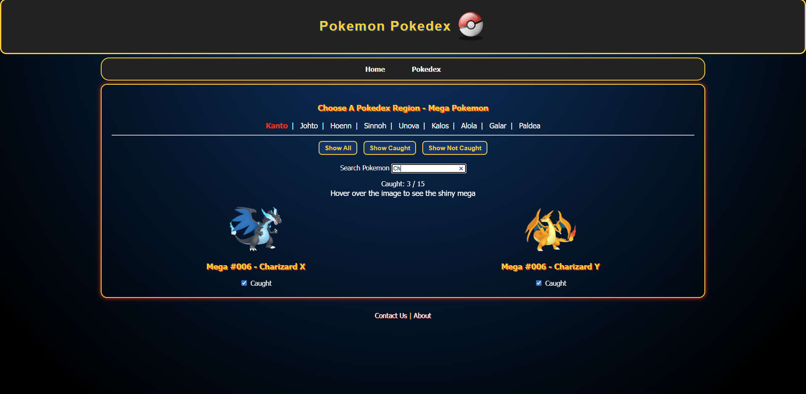
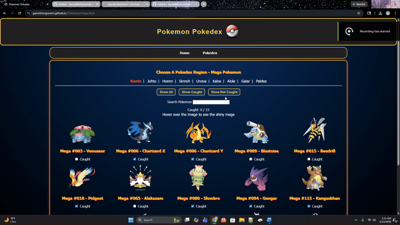
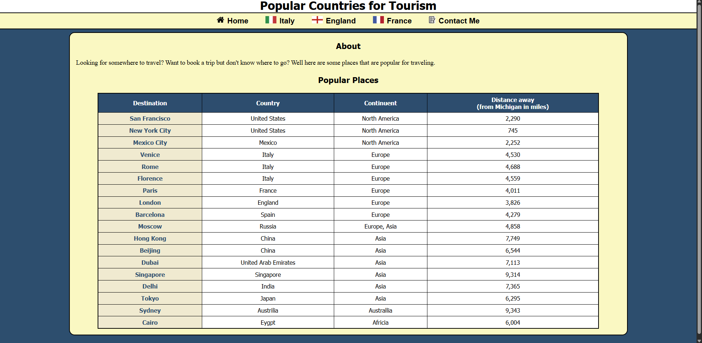
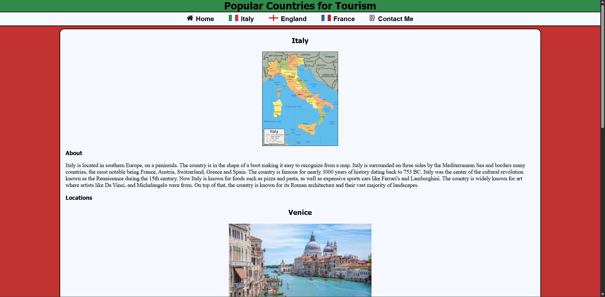
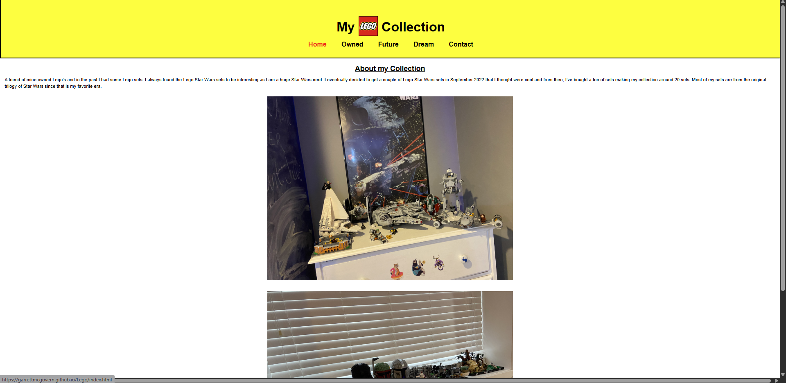
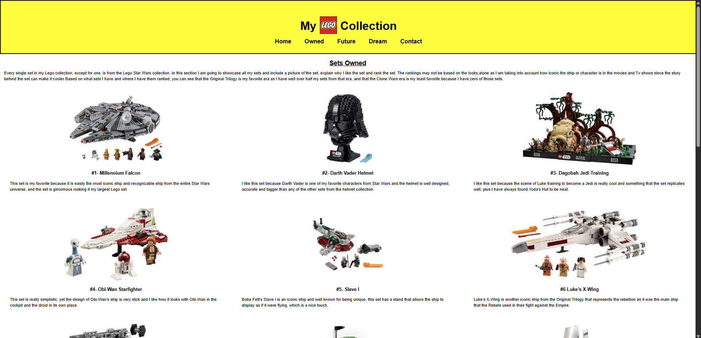

Pokémon Pokédex Collection Tracker
Overview
The Pokémon Pokédex Collection Tracker is an interactive web application that lets users browse multiple Pokédex variations and track which Pokémon they have caught. Users can filter by region, search for specific Pokémon, and mark entries as caught, with progress dynamically updated per region.
This project demonstrates building a highly interactive, scalable, and responsive interface for managing large datasets.

Technologies Used
- HTML5
- CSS3 (Responsive Layout, Flexbox)
- JavaScript (ES6)
Concepts & Skills
- DOM manipulation
- Event-driven programming
- Local storage persistence
- Conditional rendering
- Dynamic content generation
- State-based UI updates
- Responsive design
Key Features
- Multiple Pokédex variations (Normal, Shiny, Mega, G-Max, 100%)
- Region-based tab navigation
- Dynamic checkbox tracking for captured Pokémon
- Persistent progress using localStorage
- Region-specific progress counters
- Filter buttons (Show All, Caught, Not Caught)
- Live search functionality
- Shiny image hover swap for Mega and G-Max forms
- Nested navigation menu
- Responsive grid layout

Technical Highlights
- Region Tab System: Simplifies navigation and reduces the number of required pages, keeping all region data accessible in one view.
- Dynamic Checkbox + Counter Logic: Enables persistent tracking of caught Pokémon and real-time progress updates.
- Filtering & Search Functionality: Improves usability by allowing users to quickly find Pokémon and track completion.
- Shiny Hover Image Swap: Provides an interactive way to display alternate Pokémon forms without extra pages.

Challenges & How I Solved Them
- Preventing Page Overload: Avoided creating 45 subpages by implementing a region-tab system.
- Managing Persistent User State: Used localStorage to save progress across sessions.
- Handling Large Data Sets: Added filtering, search, and counters to make navigation efficient.
- Responsive Layout Issues: Implemented a flexible grid that adjusts across screen sizes.
What I Learned
- Structuring large interactive projects with scalable logic
- Writing reusable JavaScript functions
- Managing UI state effectively
- Persisting data using browser storage
- Improving UX through filtering and search
- Debugging responsive design and layout issues
Future Improvements
- Include more data about Pokemon such as typing and characteristics
- Implement the rest of the Pokemon for Normal and Shiny pages (about 800 more)
- Add more features such as different ways to sort, such as type
Popular Countries for Tourism
Overview
Popular Countries for Tourism is an informational website that highlights top travel destinations across Italy, England, and France. Each country page features a map, an about section, and key locations with images of famous landmarks.
The goal of this project was to create a clean, visually appealing layout that presents travel information in a structured and user-friendly way, while preparing the site architecture to scale as more countries are added.

Technologies Used
- HTML5
- CSS3 (Responsive layout, Flexbox)
Concepts & Skills
- Structuring multi-page websites
- Responsive design and grid layouts
- Semantic HTML for accessibility
- Image optimization and media handling
- Navigation system design
Key Features
- Homepage listing popular travel destinations by country
- Dedicated country pages for Italy, England, and France
- Each country page includes: Map of the country, About section describing culture and attractions, Key locations with images (e.g., Venice & Rome for Italy, Paris for France, London landmarks)
- Simple, intuitive navigation between countries
- Clean responsive design that adapts from desktop to mobile

Technical Highlight
Multi-Page Structure: Instead of cramming all content on a single page, each country has its own dedicated page for easier organization. Navigation allows users to move seamlessly between the homepage and country pages.
Image & Layout Handling
- Optimized images for faster load times
- Flexbox and CSS Grid used to create responsive layouts
- Ensured that maps, images, and text maintain proportion across screen sizes
Challenges & Solutions
- Layout Challenges: Implemented a responsive Flexbox and Grid system with media queries, ensuring pages display correctly on all devices.
- Organizing Content Across Pages: Created a clear menu structure linking back to the homepage, making navigation intuitive across multiple country pages.
What I Learned
- Planning scalable multi-page website structures
- Designing responsive layouts for text, images, and media
- Optimizing images and content for usability
- Implementing clean and intuitive navigation systems
- Using semantic HTML and CSS effectively for presentation
Future Improvements
- Add more countries and destinations, eventually organizing navigation hierarchically by continent → country → city
- Include interactive maps with clickable locations
- Add filtering by region or interest (historical, cultural, natural attractions)
- Integrate multimedia like videos or virtual tours for richer user experience
My LEGO Collection
Overview
My LEGO Collection is a personal website showcasing my hobby of collecting LEGO sets. The site is organized into three categories: sets I own, sets I plan on buying, and dream sets that are too expensive to purchase. Each set includes an image, a description, and a personal ranking compared to other sets I own.
This project demonstrates creating a visually organized, responsive layout for displaying a collection, while learning CSS Grid and design principles for structured content.

Technologies Used
- HTML5
- CSS3 (Responsive Layout, Grid)
Concepts & Skills
- CSS Grid layout for structured content
- Responsive design for multiple devices
- Organizing images, captions, and descriptions
- Creating visually balanced content cards
- Structuring multi-category collections
Key Features
- Pages for LEGO sets I own, plan on buying, and dream sets
- Each set includes:Image of the set, Description paragraph, Personal ranking (for sets I own)
- Grid layout displaying three sets per row
- Clean, simple informational design

Technical Highlights
- CSS Grid Layout: Displays sets in consistent rows with images, captions, and descriptions for clear organization.
- Responsive Design: Grid adjusts columns for different screen sizes to maintain readability and aesthetics.
- Multi-Category Structure: Organizes sets into Owned, To Buy, and Dream sets for easy navigation.
Challenges & How I Solved Them
- Layout Challenges: Organizing multiple images and descriptions in a clean grid. Solved by implementing CSS Grid and spacing techniques.
- Responsive Issues: Ensuring the grid looks good on smaller screens. Solved with media queries that adjust column numbers and element scaling.
What I Learned
- Using CSS Grid for structured, multi-column layouts
- Organizing content with images, captions, and text cohesively
- Implementing responsive design for different screen sizes
- Presenting collections clearly and professionally
- Improving visual hierarchy and spacing for readability
Future Improvements
- Update content to reflect my expanded LEGO collection
- Redesign the user interface for a modern look
- Add filtering by theme, year, or set type
- Introduce interactive elements such as a wishlist or comparison tool